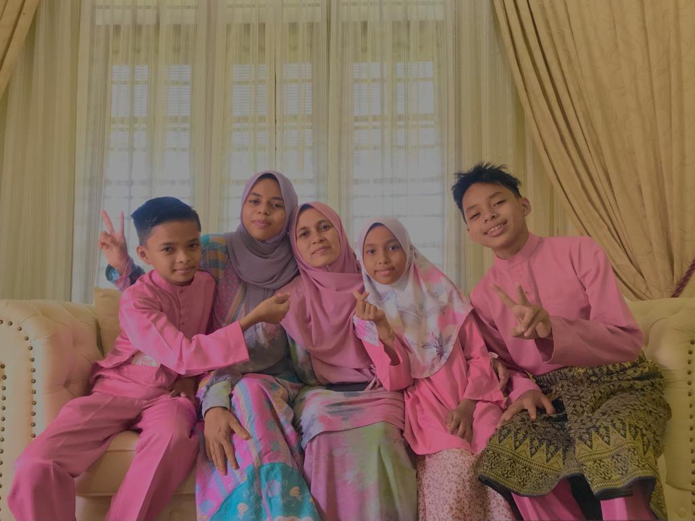

This is my family. My mother, Mazulina binti Saad is 49 years old, working as an educator or teacher in a secondary school and my father is Mohd Zamri Bin Muhammad also served as a teacher. My father passed away in 2019 at the age of 49.
I have 4 siblings and I'm the first child in my family members. My first younger brother is named Muhammad Najmi who is 18 years old. While my second brother Muhammad Najiy Ihsan who is 15 years old. And the last one is my sister Nur Ainu Najah who is 12 years old.